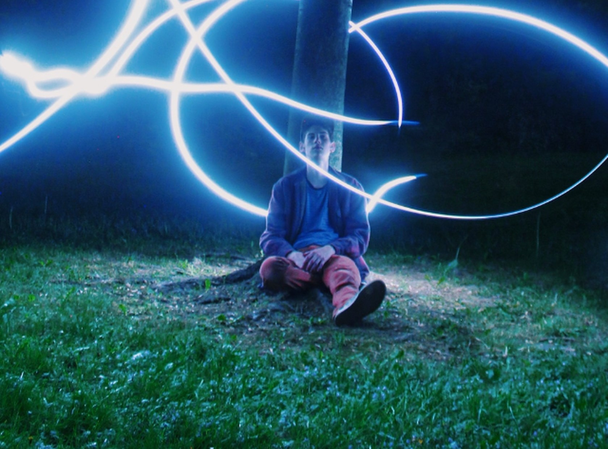

<div class="w-full h-screen flex flex-col justify-center items-center">
    <h1 class=" text-3xl font-varela -translate-y-5">
    Les évènements LGBT de Besançon
    </h1>

    <div class="slider w-[800px] h-[500px] rounded-xl overflow-hidden">
        <div class="slides w-[500%] h-[500px] flex">
            <input type="radio" name="radio-btn" class="hidden" id="radio1">
            <input type="radio" name="radio-btn" class="hidden" id="radio2">
            <input type="radio" name="radio-btn" class="hidden" id="radio3">
            <input type="radio" name="radio-btn" class="hidden" id="radio4">

            <div class="slide first w-1/5 duration-[2s]">
                    
                </div>
                <div class="slide w-1/5 duration-[2s]">
                    
                </div>
                <div class="slide w-1/5 duration-[2s]">
                    
                </div>
                <div class="slide w-1/5 duration-[2s]">
                    
                </div>
            
                <div class="navigation-auto absolute w-[800px] mt-[460px] flex justify-center">
                    <div class="auto-btn1 border-2 border-cyan-300 p-1 rounded-lg duration-1000 mr-5"></div>
                    <div class="auto-btn2 border-2 border-cyan-300 p-1 rounded-lg duration-1000 mr-5"></div>
                    <div class="auto-btn3 border-2 border-cyan-300 p-1 rounded-lg duration-1000 mr-5"></div>
                    <div class="auto-btn4 border-2 border-cyan-300 p-1 rounded-lg duration-1000 mr-5"></div>
                </div>
        </div>
        <div class="navigation-manual absolute w-[800px] -mt-10 flex justify-center">
            <label for="radio1" class="manual-btn border-2 border-cyan-300 p-1 rounded-lg cursor-pointer duration-1000 mr-5 hover:bg-cyan-500"></label>
            <label for="radio2" class="manual-btn border-2 border-cyan-300 p-1 rounded-lg cursor-pointer duration-1000 mr-5 hover:bg-cyan-500"></label>
            <label for="radio3" class="manual-btn border-2 border-cyan-300 p-1 rounded-lg cursor-pointer duration-1000 mr-5 hover:bg-cyan-500"></label>
            <label for="radio4" class="manual-btn border-2 border-cyan-300 p-1 rounded-lg cursor-pointer duration-1000 mr-5 hover:bg-cyan-500"></label>
        </div>

        </div>
    </div>
</div>